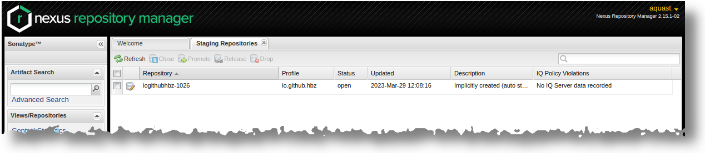
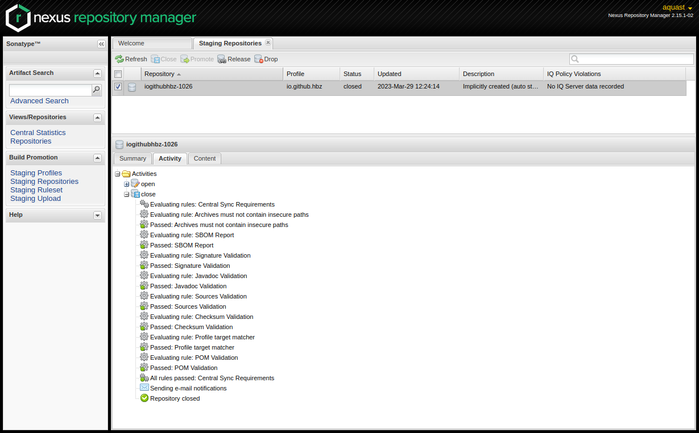

Publish to Maven Central
For publishing the most recent versions of to.science.core at Maven Central we use the Sonatype OSSRH (OSS Repository Hosting) as it is a rather lightweight way to publish artifacts at Maven Central.
The complete documentation how to publish artifacts at sonatype can be found here
For Uploading and publishing Source Code at Maven Central you need to create a Sonatype Account via the Sonatype Jira.
With that account you can either create our own repositories at OSSRH or ask any repository owner for granting access to her/his repositories
After the access is granted for publishing at to.science.core you should be able to release and publishing a new to.science.core release at Maven Central. Do that by the following steps:
1. Update the version number of the to.science.core artifact within the the to.science.core pom.xml
Although it’s possible, please do not provide a SNAPSHOT-Version
<project xmlns="http://maven.apache.org/POM/4.0.0" xmlns:xsi="http://www.w3.org/2001/XMLSchema-instance" xsi:schemaLocation="http://maven.apache.org/POM/4.0.0 https://maven.apache.org/xsd/maven-4.0.0.xsd">
<modelVersion>4.0.0</modelVersion>
<groupId>io.github.hbz</groupId>
<artifactId>to.science.core</artifactId>
<version>1.3.4</version>
<packaging>jar</packaging>
<name>Toolbox Open Science Core</name>
2. Deploy your release to the OSSRH by executing maven with some special goals
$ mvn clean source:jar javadoc:javadoc javadoc:jar verify gpg:sign deploy
If succesfull you should see somethimg like that:
[INFO] Installing /home/aquast/git/to.science.core/target/to.science.core-1.3.4-javadoc.jar.asc to /home/aquast/.m2/repository/io/github/hbz/to.science.core/1.3.4/to.science.core-1.3.4-javadoc.jar.asc
[INFO]
[INFO] --- maven-deploy-plugin:2.7:deploy (default-deploy) @ to.science.core ---
Uploading to ossrh: https://s01.oss.sonatype.org/service/local/staging/deploy/maven2/io/github/hbz/to.science.core/1.3.4/to.science.core-1.3.4.jar
Uploaded to ossrh: https://s01.oss.sonatype.org/service/local/staging/deploy/maven2/io/github/hbz/to.science.core/1.3.4/to.science.core-1.3.4.jar (109 kB at 15 kB/s)
Uploading to ossrh: https://s01.oss.sonatype.org/service/local/staging/deploy/maven2/io/github/hbz/to.science.core/1.3.4/to.science.core-1.3.4.pom
Uploaded to ossrh: https://s01.oss.sonatype.org/service/local/staging/deploy/maven2/io/github/hbz/to.science.core/1.3.4/to.science.core-1.3.4.pom (5.8 kB at 7.1 kB/s)
Downloading from ossrh: https://s01.oss.sonatype.org/service/local/staging/deploy/maven2/io/github/hbz/to.science.core/maven-metadata.xml
Uploading to ossrh: https://s01.oss.sonatype.org/service/local/staging/deploy/maven2/io/github/hbz/to.science.core/maven-metadata.xml
Uploaded to ossrh: https://s01.oss.sonatype.org/service/local/staging/deploy/maven2/io/github/hbz/to.science.core/maven-metadata.xml (308 B at 338 B/s)
Uploading to ossrh: https://s01.oss.sonatype.org/service/local/staging/deploy/maven2/io/github/hbz/to.science.core/1.3.4/to.science.core-1.3.4-sources.jar
Uploaded to ossrh: https://s01.oss.sonatype.org/service/local/staging/deploy/maven2/io/github/hbz/to.science.core/1.3.4/to.science.core-1.3.4-sources.jar (100 kB at 89 kB/s)
Uploading to ossrh: https://s01.oss.sonatype.org/service/local/staging/deploy/maven2/io/github/hbz/to.science.core/1.3.4/to.science.core-1.3.4-javadoc.jar
Uploaded to ossrh: https://s01.oss.sonatype.org/service/local/staging/deploy/maven2/io/github/hbz/to.science.core/1.3.4/to.science.core-1.3.4-javadoc.jar (547 kB at 297 kB/s)
Uploading to ossrh: https://s01.oss.sonatype.org/service/local/staging/deploy/maven2/io/github/hbz/to.science.core/1.3.4/to.science.core-1.3.4.jar.asc
Uploaded to ossrh: https://s01.oss.sonatype.org/service/local/staging/deploy/maven2/io/github/hbz/to.science.core/1.3.4/to.science.core-1.3.4.jar.asc (488 B at 1.6 kB/s)
Uploading to ossrh: https://s01.oss.sonatype.org/service/local/staging/deploy/maven2/io/github/hbz/to.science.core/1.3.4/to.science.core-1.3.4.pom.asc
Uploaded to ossrh: https://s01.oss.sonatype.org/service/local/staging/deploy/maven2/io/github/hbz/to.science.core/1.3.4/to.science.core-1.3.4.pom.asc (488 B at 1.5 kB/s)
Uploading to ossrh: https://s01.oss.sonatype.org/service/local/staging/deploy/maven2/io/github/hbz/to.science.core/1.3.4/to.science.core-1.3.4-sources.jar.asc
Uploaded to ossrh: https://s01.oss.sonatype.org/service/local/staging/deploy/maven2/io/github/hbz/to.science.core/1.3.4/to.science.core-1.3.4-sources.jar.asc (488 B at 1.7 kB/s)
Uploading to ossrh: https://s01.oss.sonatype.org/service/local/staging/deploy/maven2/io/github/hbz/to.science.core/1.3.4/to.science.core-1.3.4-javadoc.jar.asc
Uploaded to ossrh: https://s01.oss.sonatype.org/service/local/staging/deploy/maven2/io/github/hbz/to.science.core/1.3.4/to.science.core-1.3.4-javadoc.jar.asc (488 B at 1.3 kB/s)
[INFO] ------------------------------------------------------------------------
[INFO] BUILD SUCCESS
[INFO] ------------------------------------------------------------------------
[INFO] Total time: 25.454 s
[INFO] Finished at: 2023-03-29T12:08:23+02:00
[INFO] ------------------------------------------------------------------------
3. To proceed log-in to the NEXUS Webinterfaces staging Repositories section
Within a Browser go to the URL https://s01.oss.sonatype.org/#stagingRepositories . You will be asked to log-in and directed to the stagingRepository-section. There you now should be able to find your uploaded artifact as a “repository”. Unfortunately the naming of the repository is not “that” straight forward if you are a human being.
{kind=link}
{kind=link}
5. Last step: Release your artifact to Maven Central
If all closing steps are done successfully, the ‘Release’ button will become available for you. By clicking ‘Release’ you will release and publish your artifact to Maven Central. Additionally the artifact will be removed from the stagingRepositories section.
{kind=link}
It can take some time (in minuites or hours) until you can see your artifact at the Maven Central Searches. Nevertheless the artifact should be already accessible for beeing imported via pom.xml or build.sbt